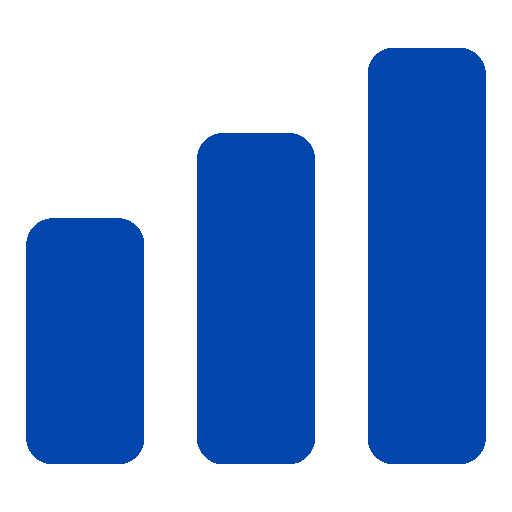
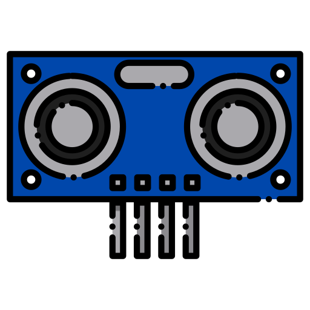
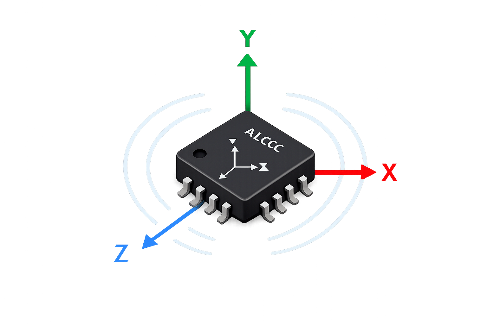
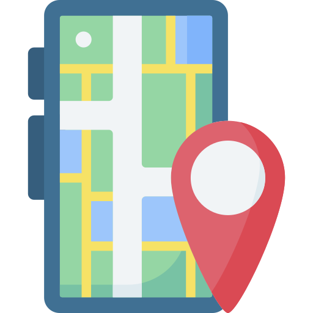

About us
SAMPLE
● LIVE
The Multi-Sensor Smart Cane is an assitive device designed to help visually impaired individuals naviagte safely in real-time environments. By integrating multiple sensors, the smart cane can detect obstacles, monitor movement, and provide instant feedback to the user.
Our goal is to enhance mobility, build confidence, and improve the overall quality of life for the visually impaired community.
Learn more about EID

Combines ultrasonic sensor, accelerometer, LED, buzzer and GPS to detect obstacles and monitor.

Provides instant audio and visual alerts to helps users respond quickly to their surroundings.

Live tracking of cane status, movement, and obstacle detection for enhanced safety.
Built for reliability and ease of use, ensuring safer navigation in daily life.

Detects nearby obstacles and alerts users instantly for safer navigation.

Monitors movement, tilt, and cane orientation in real-time to detect falling.
Provides visual signals and system status information.
Produces sound warnings whenever an obstacle is detected.

Provides real-time location of the cane for surveillance.
A team of passionate innovators dedicated to building impactful solutions for the visually impaired

Team leader
Description
Description
Description
Description
Description
Description
Description
Description
This website is created for educational and informational purposes only. It is intended for non-commercial use and is designed to demonstrate layout, design and development concepts.
All imaes, icons, and logos used in this website are aither sourced from free-to-use platforms or are used under licenses that permit, non commercial use only.
We do not claim ownership of any third-party assets unless explicitly stated. All trademarks, logos, and brand names remain the property of their respective owners (Nanyang Technological University of Singapore)
This project is not intended for commercial purposes. It is intended for academic purpose under MAE EID circumstances. No products or services are sold through this website.
If you are the owner of any content used here and believe it should not appear on this website, please contact us for prompt removal.